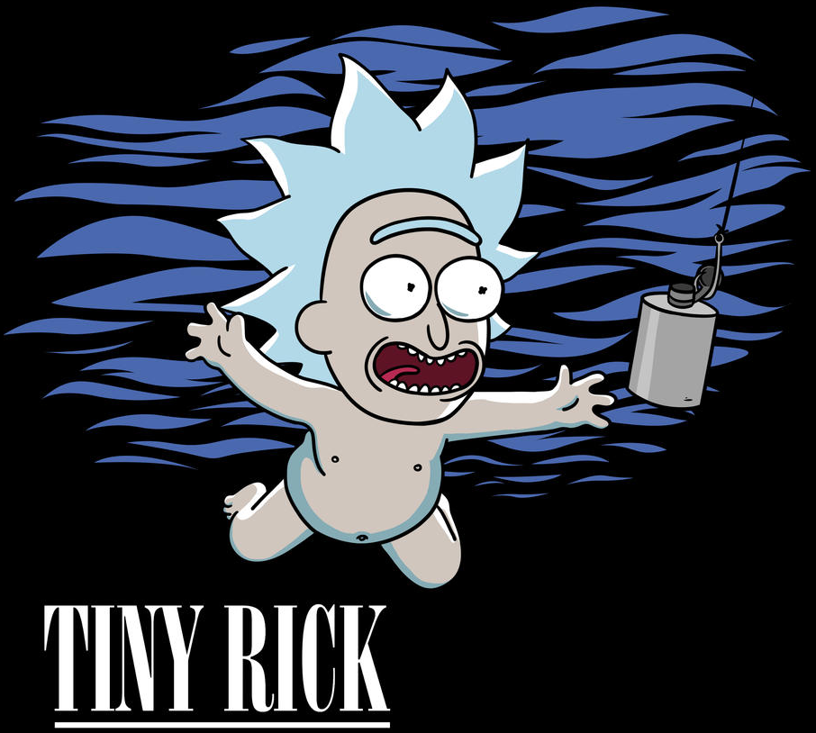

EVALS
1Ô∏è‚É£ü§ñ Rating
2Ô∏è‚É£ü§ñ Classification
3Ô∏è‚É£ü§ñ Category
4Ô∏è‚É£üíª Verificar LLM 1
5Ô∏è‚É£ü§ñ Limpiar redundancia
6Ô∏è‚É£ü§ñ Fundamentar aserciones
7Ô∏è‚É£ü§ñ Verificar LLM 2
8Ô∏è‚É£ü§ñ Crear requirement texto
9Ô∏è‚É£üíª Verificar faltantes
1Ô∏è‚É£0Ô∏è‚É£üíª Verificar nuevas interfaces
1Ô∏è‚É£1Ô∏è‚É£üß™ Test coverage
GROKY
ISSUE
COPY
PR
COPY
COMMIT
COPY
ASSERTIONS
COPY